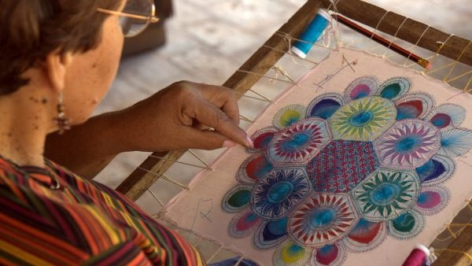
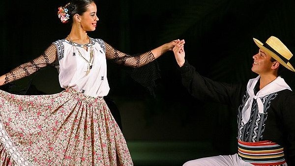
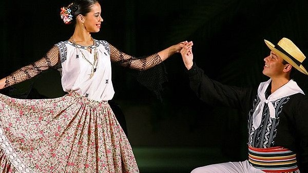

Imagenes relacionadas




La música paraguaya es uno de los aspectos más particulares de la cultura del país ya que es el único país de Sudamérica donde casi toda la población habla o al menos comprende el idioma nativo, pero su música es totalmente de proyeción europea.
La danza paraguaya es producto del conjunto de expresiones artísticas de orígenes criollos y guaraníes que fueron adoptados en la cultura escenográfica paraguaya para expresar el acervo cultural a través de ritmos musicales autóctonos como la polka paraguaya.
La cultura sobre el consumo del pojhá ñaná (pohã ñana, en guaraní) está presente en todos los estratos sociales del Paraguay.2 Se trata de una expresión guaraní que significa "hierbas medicinales", y está asociada al consumo de estas hierbas en el mate y tereré.
De la leyenda de Taú y Keraná nacieron los 7 mitos guaraníes: Teju jagua, Jasy Jateré, Moñái, Mbói Tu'i, Kurupí, Ao ao, Luisón. Otros mitos famosos son Jaguareté Avá (El indio tigre) o “tigre-capiango”, Póra (fantasma), Ka'aguy póra (fantasma del bosque).